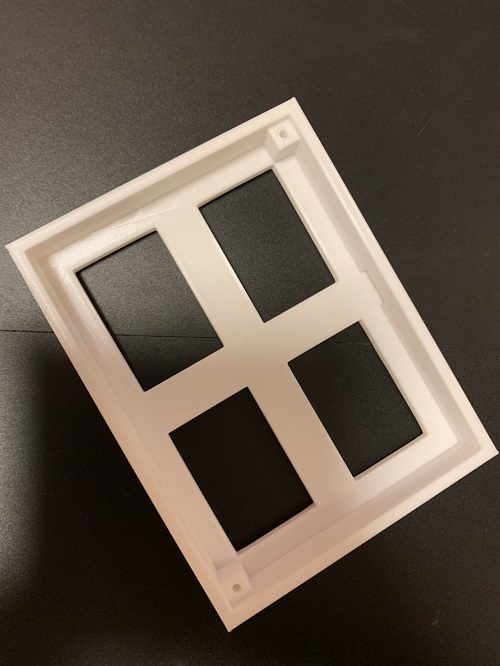

本体試作品1
＜ポイント＞
最もコンパクトなデザインに。
→コンパクトさを追求すると写真の額縁みたいになってしまう。。。

本体試作品2
＜ポイント＞
ソーラーパネルに傾斜をつけることで光りを吸収しやすくした
→置物っぽくて場所を取る感じが普通のソーラーパネルっぽい
試運転

本体試作品3
＜ポイント＞
持ち運びできるような形でコンパクトに。
→なんかスマホみたい。デザインがつまらない。。。
やっぱり持ち運びできるデザインでなければならないのかなあ、と3日、4日迷走。
本体試作品4
最終形態は3Dプリンターで今作ってるナウなのでゼミで見せてから写真を貼りまっす